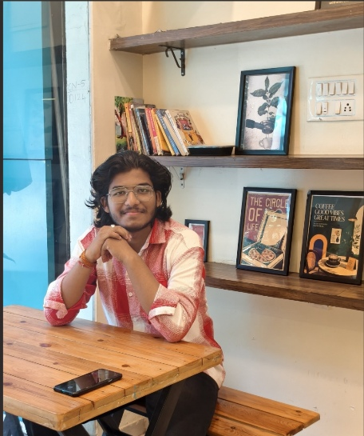

Building, learning, repeating.
Computer Engineering at Sinhgad College of Engineering. Exploring AI and geospatial technologies, building products, and finding new questions to chase.
COMPUTER ENGINEERING STUDENT · PUNE, INDIA
Hi, I’m Saurav. I turn ideas into things that work — and keep asking what else they could become.

FIG. 01 / THE BUILDERA mind always somewhere in the making.✳NOT JUST CODE. Curiosity made tangible.
SCROLL, WANDER, OPEN A DOOR ↘SELECTED EXPERIMENTS
Some started with a problem.
Others with a “what if?”
All of them became something real.
I like the part where a question becomes a working thing.
— SAURAV, PROBABLY IN THE MIDDLE OF A BUILDA WORK IN PROGRESS
A timeline of things learned,
built and still becoming.
No invented titles. Just the work.
Computer Engineering at Sinhgad College of Engineering. Exploring AI and geospatial technologies, building products, and finding new questions to chase.
Developing IceNav for Smart India Hackathon, working on a Hyper-Local AQI Intelligence Dashboard with Team VayuVigyan, and building Echo — a better memory for the things you save.
Hackathons, hardware experiments, maps, apps, and unconventional ideas. The point is to learn by making something that works.
A LITTLE ABOUT ME
BE Computer Engineering
Sinhgad College of Engineering
SPPU · Pune, Maharashtra
I’m drawn to the space between a useful idea and the moment it finally works.
A computer engineering student who likes building real things: Android apps, full-stack experiences, maps that help people decide, and small hardware projects that do exactly what they promise.
AI, software engineering, WebGIS and interactive experiences keep my curiosity busy. Hackathons make good deadlines. A rough prototype beats a perfect slide deck every time.
Have a good question? ↗THE TOOLBOX, STILL GROWING
No skill percentages.
Just tools I’ve worked with
and ideas I’m exploring.
TOOLS ARE ONLY INTERESTING WHEN THEY HELP SOMETHING HAPPEN.
YOUR TURN
OPEN TO COLLABORATIONS · HACKATHONS · OPPORTUNITIESI’m interested in projects, collaborations, hackathons and opportunities to build something meaningful. Tell me what you’re thinking.